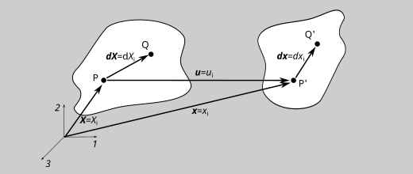
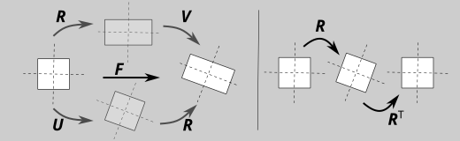
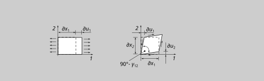

deformatoin / infinitesimal strain tensor#
strain definition in one dimension#
In a one dimensional system the deformation of a infinitesimal line-element (endpoints \(P\) and \(Q\)) is defined by the quantities:
\(X\), the material coordinate(s) (reference configuration; “names” of each material point
\(u(X,t)\), the displacement/relative movement of each point “named” \(X\)
\(x(u,t)=x(X,t)\), the current coordinate(s) of each point (current configuration)
\(dX\), “undeformed” distance between \(P\) and \(Q\)
\(dx\), “deformed” distance between the points at the new location \(P'\) and \(Q'\)
The new locatoin of the material poins is decribed by:
\(P'=x_P=x(X_P,t)=X(P)+u(P,t)\) and
\(Q'=x_Q=x(X_Q,t)=X(Q)+u(Q,t)=x(P,t)+dx(t)=X(P)+dX+u(P,t)+du(t)\)
By the way, the time \(t\) only indicates, that there are different deformatoins possible. The time here is more a loadstep or load scale factor than a real time.
The new length \(dx\) of the line-element \(dX\) is:
\(dx=x(Q,t)-x(P,t)=[X(P)+dX+u(P,t)+du(t)]-[X(P)+u(P,t)]=dX+du\)
and the relative change or the deformation gradiet \(F\) of the line element is
\(F=dx/dX=dX/dX+du/dX=1+du/dX\)
\(F=dx/dX=\lambda\) is the stretch (not the strain; the reason for all this different variables will be clear after the next chapter). For a undeformed structure \(\lambda=1\) (not \(0\)). A strain like deformation-quantity is
\(G=1/2(F^2-1)=1/2[(1+du/dX)^2-1]=1/2[(1+2\cdot du/dX+d^2u/dX^2)-1]\) \(=du/dX+1/2 \cdot d^2u/dX^2 \)
For small strains (small deformatoins) the line-element \(dx\) is nearly unchanged and \(du/dX\approx du/dx\) and \(d^2u/dX^2\approx 0\). So the engineering strain \(\epsilon\) is defined by:
\(G\approx \epsilon=du/dx=\lambda-1\)
Example
The deformation of a truss (Endpoints \(X(P)=11\); \(X(Q)=1\)) is given by the following equation: \(x=1/4\,(5\cdot X+19)\)
draw a sketch of the undeformend end deformed truss
calculate the displacement \(u\)
calculate the strain \(\epsilon\)
calculate the stretch \(\lambda\) (here equal to \(F\), because of one dim.)
three dim. deformation / deformation gradient#
For three dimensions, it is nearly the same, but a little bit more complicated.
The vectors \(\boldsymbol{X}=X_i\) are the material coordinates (the “nemes” of each point)
The vectors \(\boldsymbol{x}(X)=x_i\) are the current coordinate(s) of each point and describe the deformed geometry.
The vectors \(\boldsymbol{u}(X)=\boldsymbol{x}-\boldsymbol{X}=u_i\) are the displacement of each point.
The displacement is a vector field can change in every point. The variiation of \(\boldsymbol{u}\) is decibed by the total derivate of eachvector componend:
\(du_i=\frac{\partial u_i}{\partial X_j}dX_j=\left(\begin{array}
{c} \frac{\partial u_1}{\partial X_1}dX_1+\frac{\partial u_1}{\partial X_2}dX_2+\frac{\partial u_1}{\partial X_3}dX_3 \\
\frac{\partial u_1}{\partial X_1}dX_1+\frac{\partial u_1}{\partial X_2}dX_2+\frac{\partial u_1}{\partial X_3}dX_3 \\
\frac{\partial u_1}{\partial X_1}dX_1+\frac{\partial u_1}{\partial X_2}dX_2+\frac{\partial u_1}{\partial X_3}dX_3 \end{array}\right)\)
or
\(du_i=\frac{\partial u_i}{\partial X_j}dX_j=
\frac{\partial (x_i-X_i)}{\partial X_j}dX_j=
\frac{\partial x_i-\partial X_i}{\partial X_j}dX_j=\)
\(\frac{\partial x_i}{\partial X_j}dX_j-\frac{\partial X_i}{\partial X_j}dX_j=
\frac{\partial x_i}{\partial X_j}dX_j-\delta_{ij}\,dX_j=
\frac{\partial x_i}{\partial X_j}dX_j-dX_i\)

\(d\boldsymbol{u}=d\boldsymbol{x}-d\boldsymbol{X}=\frac{\partial \boldsymbol{x}}{\partial \boldsymbol{X}}d\boldsymbol{X}-d\boldsymbol{X}=\frac{\partial x_i}{\partial X_j}dX_j-dX_i\)
so, the change of the infinitesimal line element \(\boldsymbol{dX}\) to \(\boldsymbol{dx}\) is described by deformation gradient \(\boldsymbol{F}\):
\(\boldsymbol{F}={\partial \boldsymbol{x}}/{\partial \boldsymbol{X}}=F_{ij}={\partial x_i}/{\partial X_j}\)
The tensor \(\boldsymbol{F}\) decribes the stretch of the line elemnet \(d\boldsymbol{X}\). For an undeformed body \(\boldsymbol{X}=\boldsymbol{x}\) and \(\boldsymbol{F}=\boldsymbol{1}=F_{ik}=\delta_{ik}\).
For a constant displacemant \(x_i=X_i+k\) \(F_{ik}=\delta_{ik}\) too.
For a rigid body rotation, the line element \(\boldsymbol{X}\) only changes the orientation, but not the length. But the componets of \(\boldsymbol{X}\) are changing, and so \(F_{ik}\neq \delta_{ik}\). This is a problem, because so \(\boldsymbol{F}\) does not easyly indecates a deformation of the body
The rotation in \(\boldsymbol{F}\) can be elininated by using the fact, that for a pur rotation tensor it is:
\(\boldsymbol{R}\cdot\boldsymbol{R}^T=\boldsymbol{1}\) or \(R_{ik}\cdot R_{jk}=\delta_{ij}\)
The deformationgradient F can be splitted in a pure rotation R and a Deformatoin U or V (depending on the order of the two operations).

Example
The movement of a body is described by the vector-function
A: \(x^A_i(t)=\left(\begin{array} {c}X_1+2t \\ X_2+t \\ X_3\\ \end{array}\right)\)
B: \(x^B_i(t)=\left(\begin{array} {c}X_1-X_2\cdot cos(t)\\ X_2-X_1\cdot sin(t) \\ X_3\\ \end{array}\right)\)
a: Sketch the resulting deformation for a simple body b: Calculate the deformation gradient \(\boldsymbol{F}\) c: Calculate \(\boldsymbol{F}^T\cdot \)\boldsymbol{F}$
strain tensor (finite strain theorie)#
So, one can do the following operation: \(\boldsymbol{F}=\boldsymbol{R}\cdot\boldsymbol{U}=\boldsymbol{V}\cdot\boldsymbol{R}\)=\(F_{ik}=R_{in}\cdot U_{nk}=V_{im}\cdot R_{mk}\)
and: \(\boldsymbol{F}^T\cdot \boldsymbol{F}=F_{op}\cdot F_{oq}=\) \((R_{on}\cdot U_{np})\cdot (R_{om}\cdot U_{mq})=\) \(R_{on}\cdot R_{om}\,\,\cdot\,\, U_{np} \cdot U_{mq} =\) \(\delta_{nm}\cdot\,\, U_{np} \cdot U_{mq} =\) \(U_{mp} \cdot U_{mq}=C_{pq}\)
After this operation a tensor \(\boldsymbol{C}\) is created, in which the rigit body rotation is eleminated. This deformation tensor is called:
CAUCHY-GREEN-deformation tensor: \(\boldsymbol{C}=\boldsymbol{U}^T \cdot \boldsymbol{U}\) or \(C_{pq}=U_{mp} \cdot U_{mq}\)
For an undeformed body \(\boldsymbol{C}=\boldsymbol{1}\). A deformation tensor which is \(\boldsymbol{0}\) is the
GREEN-LAGRANGE-deformation tensor: \(\boldsymbol{G}=1/2(\boldsymbol{C}-\boldsymbol{1})\) or \(G_{pq}=1/2(C_{pq} - \delta_{pq})\)
The formulation of these equations is generally valid, i.e. for large deformatins (Finite-Strain-Theorie).
infinitesimal strain tensor (linear theorie)#
To get a linear deformatoin tensor the tensor $\boldsymbol{G} must first be reformulated:
The deformation gradient can be written as a function of the displacement \(\boldsymbol{u}\):
\(F_{ki}=\frac{\partial x_k}{\partial X_i}=\frac{\partial (X_k+u_k)}{\partial X_i}\) \(=\frac{\partial X_k+\partial u_k}{\partial X_i}=\frac{\partial X_k}{\partial X_i}+\frac{\partial u_k}{\partial X_i}\) \(=\delta_{ki}+\frac{\partial u_k}{\partial X_i}\)
so:
\(F_{ki}\cdot F_{kj}=(\delta_{ki}+\frac{\partial u_k}{\partial X_i})\cdot(\delta_{kj}+\frac{\partial u_k}{\partial X_j})\) \(=\delta_{ki}\delta_{kj}+\frac{\partial u_k}{\partial X_i}\delta_{kj}+\delta_{ki}\frac{\partial u_k}{\partial X_j}+\frac{\partial u_k}{\partial X_i}\frac{\partial u_k}{\partial X_j}\) \(=\delta_{ij}+\frac{\partial u_j}{\partial X_i}+\frac{\partial u_i}{\partial X_j}+\frac{\partial u_k}{\partial X_i}\frac{\partial u_k}{\partial X_j}\)
For small deformations the following is approximately
\(\partial X_i\approx \partial x_i\) and \(\frac{\partial u_k}{\partial X_i}\frac{\partial u_k}{\partial X_j}\approx 0\)
so the infinitesimal strain tensor \(\boldsymbol{\epsilon}\) is
\(G_{ij}\approx \frac{1}{2}(\frac{\partial u_i}{x_j}+\frac{u_j}{x_i})=\epsilon_{ij}\)
Interpretatino of \(\boldsymbol{\epsilon}\):
\(\epsilon_{11}=\frac{\partial u_1}{\partial x_1}\): classical normal strain
\(\epsilon_{12}=\epsilon_{21}=\frac{1}{2}(\frac{\partial u_1}{x_2}+\frac{u_2}{x_1})=\frac{1}{2}\gamma_{12}\): half of the classical shear strain

\(\boldsymbol{\epsilon}=\epsilon_{ik}= \begin{bmatrix} \epsilon_{11} & \epsilon_{12} & \epsilon_{13}\\ \epsilon_{21} & \epsilon_{22} & \epsilon_{23}\\ \epsilon_{31} & \epsilon_{31} & \epsilon_{33}\\ \end{bmatrix} = \begin{bmatrix} \epsilon_{11} & \frac{1}{2}\gamma_{12} & \frac{1}{2}\gamma_{13}\\ \frac{1}{2}\gamma_{21} & \epsilon_{22} & \frac{1}{2}\gamma_{23}\\ \frac{1}{2}\gamma_{31} & \frac{1}{2}\gamma_{32} & \epsilon_{33}\\ \end{bmatrix}\)
Example
The movement of a body is described by the vector-function
\(x_i(t)=\left(\begin{array} {c}X_1 \\ X_2-t\cdot X_3\\ X_3+t\cdot X_2\\ \end{array}\right)\)
a: Sketch the resulting deformation for a simple body and \(t=0,5\) b: Calculate \(\boldsymbol{F}\), \(\boldsymbol{F}\) and \(\boldsymbol{\epsilon}\)